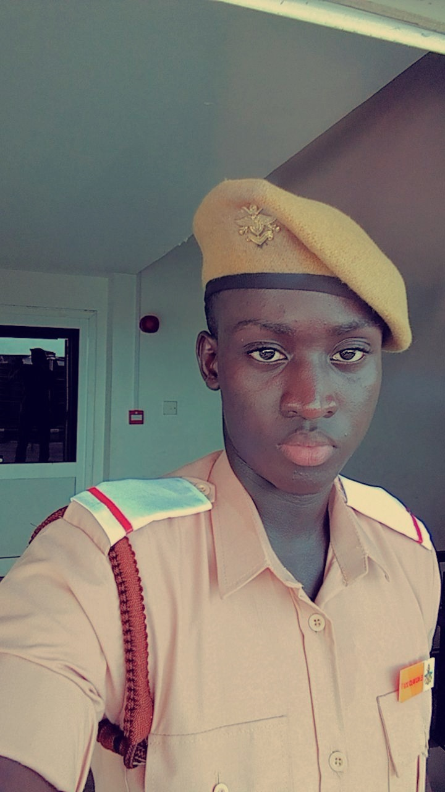

El Hadji Malick Diouf

Senegalese passionate about science, particularly in physics, chemistry, geography and history.
(❁´◡`❁)
☛ El Hadji Malick Diouf , born on October 22, 2002, in Dakar, Senegal, studied in Bambylor High School from 2015 to 2021 .
☛ Where i earned my scientific degree called Baccalaureat in 2021.
☛ In 2022, After few months in THIES UNIVERSITY where i was follow my PHYSIC and CHIMIC degree i stopped to join the army.
☛ Then my story with the Sri lanka begins
☛ This is just about me during 9 years ago .